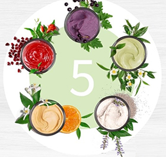

Sia Beauty Bar
приглашает Вас на процедуры безинъекционного омоложения кожи, бьюти-детокс, мультимаскинг, программу DETOX Menu.
В результате прохождения курса уходовых процедур Вы получите: увлажнение, питание кожи, лифтинг, защита от вредных факторов среды, ровный цвет лица, уход за контуром глаз, профилактический массаж лица, и конечно же, уверенность в привлекательности собственной внешности! А также Вы получите рекомендации для домашнего ухода. В зависимости от индивидуальных потребностей Вашей кожи, Вам доступны следующие виды процедур:
Процедура экспресс-восстановления кожи лица включает в себя:
Программы ухода за кожей лица по проблемам:
Этапы ухода:
Ультразвуковая чистка лица позволяет максимально эффективно очистить кожу, не травмируя ее. Чистка лица ультразвуком подойдет абсолютно каждому, предназначена для любого типа кожи.
Этапы всех процедур проводятся с помощью профессиональных косметических средств ARTISTRY™ (США) , учитывая все индивидуальные особенности кожи (тип и возраст).
до 5 масок для решения различных проблем кожи одновременно за 7 минут
Это 5 новых масок для лица, которые можно использовать индивидуально или комбинировать различными способами, нанося разные маски на разные зоны лица в зависимости от индивидуальных потребностей.
Персональные Маски для лица содержат тщательно отобранные растительные экстракты, а также другие ингредиенты, полученные из источников натурального происхождения. Созданы в синергии здоровья и красоты.
Мы создадим Вашу персональную программу ухода, выбрав маски, которые нужны именно Вашей коже, ведь с масками Signature Select Вы можете создать свыше 25 комбинаций. Они обеспечивают мгновенный результат, всего 7 минут — и Ваша кожа сияет красотой!
Формула каждой маски выходит за рамки обычных преимуществ средств по уходу за кожей благодаря сочным цветам, разнообразным текстурам и роскошным парфюмерным композициям, которые создают дополнительное удовольствие от ухода.
Вам понравится стимулирующее и очищающее действие отшелушивающей маски-сахарного скраба с черной смородиной.
Или шелковистый крем-мусс с семенами чиа маска осветляющая тон кожи делает кожу более яркой, придает сияющий внешний вид и наполняет ее энергией. Кожа выглядит бодрой и излучает жизненную силу.
Или укрепляющая и моделирующая маска - разогревающийся гель-эмульсия с гранатом. Эта ультрапитательная маска делает кожу более упругой, подтянутой и обновленной, сглаживает мелкие морщинки.
А может плотный крем-глина с цитрусом - очищающая маска для кожи лица сужает поры, очищая их от излишнего жира, и делает кожу чище. Также маска способствует матированию кожи, избавляя от жирного блеска на весь день, благодаря чему макияж держится дольше.
И еще, воздушное суфле с зеленым чаем – увлажняющая глубоко действующая маска дарит коже чувство мгновенного увлажнения, гладкости и эластичности, которое длится весь день. Она также поможет успокоить кожу, страдающую от агрессивных факторов окружающей среды.
Оформление бровей (придание нужной формы, окраска)
Окрашивание бровей хной считается самой безопасной процедурой коррекции линии роста волосков и визуального придания густоты. Красящий пигмент не проникает вглубь волосков и никак не травмирует кожу, за счет чего легко поддается смыванию спустя несколько недель.
Хна - это растительный пигмент для покраски волос и нанесения рисунка на кожу. Красящий пигмент добывается путем высушивания листьев хенны (лавсонии неколючей), за счет чего является полностью натуральным.
Хна на бровях выглядит более ярко не же ли краски для бровей, которые имеют свойство быстро смываться. Уже несколько лет я доверяю свои брови и использую в работе индийскую хну Grand Henna, которая прекрасно наносится, идеально смотрится и «носится» примерно 2-3 недели.
Средства по уходу за телом – это широкий ассортимент товаров, среди которых вы обязательно найдете что-то для себя: качественные косметические средства для увлажнения и очищения, которые одинаково подходят как мужчинам так и женщинам, и детям.
3 линейки подойдут для ухода за кожей для всей семьи:
Body-серии NOURISH+, REFRESH+ и PROTECT+ — это эксклюзивные сочетания ингредиентов из натурального сырья, которые заботятся о вашей коже. G&H заботится не только о вашей коже, но и об окружающей среде, используя исключительно экологичные методы производства.
Для полноценной заботы о своей коже следует выбирать профессиональные средства.
Не менее важным фактором в борьбе за молодость и красоту, и в борьбе с негативными воздействиями окружающей среды и их последствиями должна быть правильная еда (насыщенная фитонутриентами, макро- и микроэлементами) и уход против свободных радикалов.
Детокс начинается с головы.
Одна из функций организма — это сохранять вещества, которые в него попадают. К сожалению, организм накапливает не только полезные, но и вредные вещества. Их источниками являются плохого качества вода, воздух, продукты питания, косметика, бытовая химия и лекарства. Накапливаясь в организме, они вызывают болезни. Очистить тело от опасных веществ можно с помощью процессов, которые происходят в нем естественным образом.
Чтобы не навредить организму во время детоксикации, необходимо уделить особое внимание рациону и образу жизни. Для этого и разработана программа «Детокс». Вы будете употреблять напитки и еду, которые способствуют выведению вредных веществ из организма. Особое внимание мы уделим печени, потому что это главный орган, который отвечает за удаление из организма всего ненужного и ее легко «засорить»
Питание человека должно быть сбалансировано. В период детоксикации с этим хорошо справляются специальные комплексы витаминов и минералов. Вы узнаете из каких компонентов они состоят и какой продукт в каких случаях стоит принимать.
Уникальность проекта в гарантии онлайн-программы сбалансированного питания, физических упражнений, мотивации и персональной поддержки опытного наставника.
Живите на полную! И оставайтесь активными, здоровыми и красивыми!